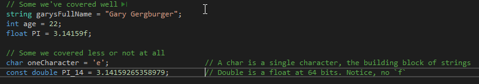
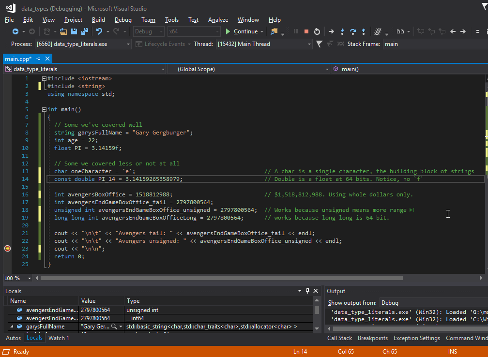
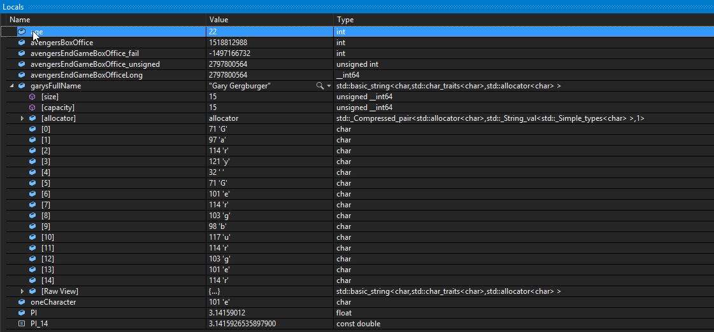
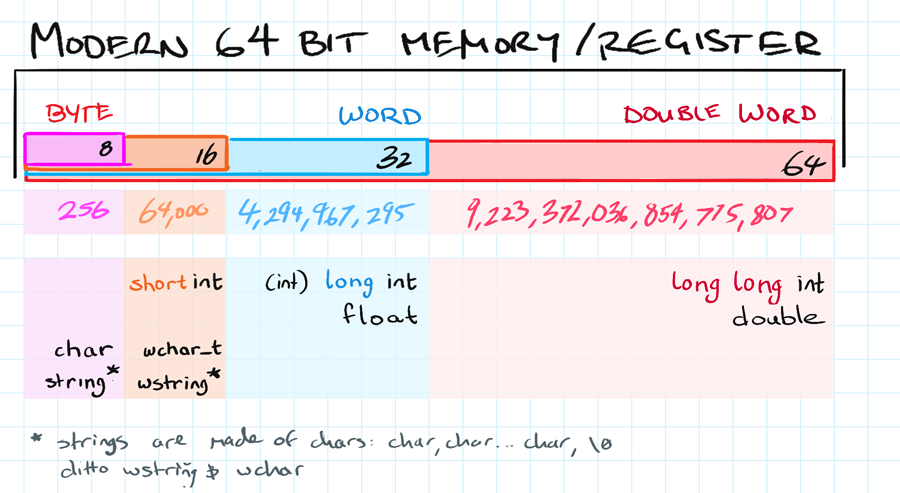
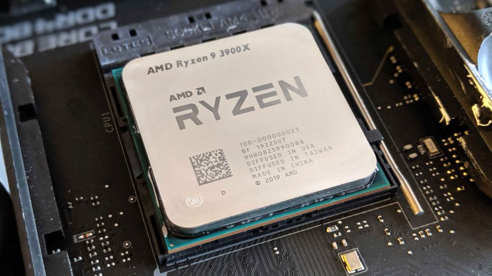
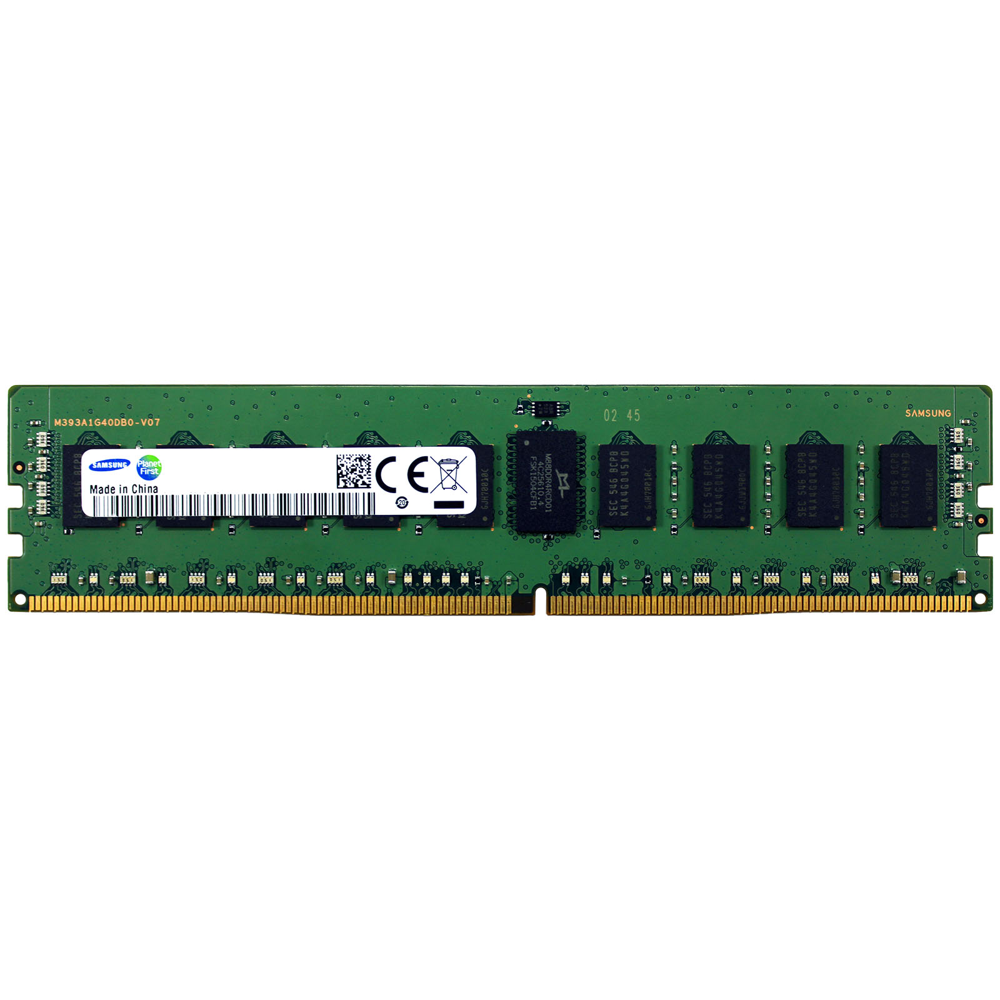
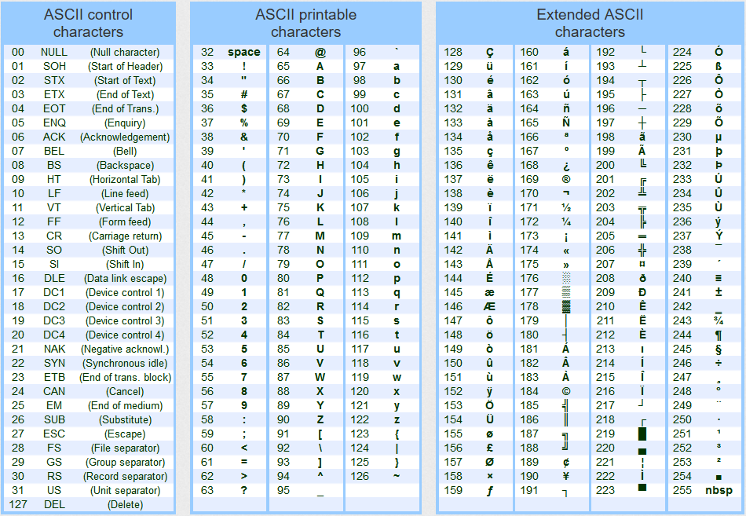
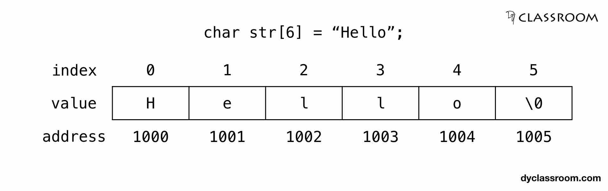

Week 7 ISE102
Covered this week
-
How code becomes programs
- Compiling, linking
-
chars and strings
-
using the debugger to look at variable values in memory. This helps us see what happens to values when we assign them to various types.
-
Creating values for different data types
- Refresher:
int, long int, short int. - Differences in size (bytes, words, half words, double words.
- More refresher:
float, double. - string, wstring, char, wchar, int, long int, unsigned long int
- Refresher:
-
Exam, briefly.
Assigning values to variables of different types
When you assign a value to a variable, you write that value down with punctuation in a way c++ recognises.
A value written in code like "Gary", 22.556f or 435 is called a literal. As in 435 isn’t a variable, it is literally four hundred and thirty five.
Very important to understand:
When you write that value, C++ doesn’t guess assume it’s of the same data type as the variable you’re assigning to. It goes strictly off the way you write it!

It basically creates a nameless variable to hold it… then does the assignment.
Integer assignment
Integer literals are pretty simple. You write a number with nothing around it. However, we will find that what we assign it to makes a difference!
Exercise: Enter this code

Fortunately we dont have to use cout for every single variable to know what’s stored in it.
We can see what’s in our assigned variables in Visual Studio’s debug mode by looking in the Locals window.

Knowing what your variable can hold
This is super important if you don’t want to lose or corrupt your data. You can’t stick an elephant in a cat carrier without losing a lot of elephant… in spaghetti form.
What’s wrong with using int for avengersEndGameBoxOffice_fail? It ‘only’ handles numbers between −2,147,483,648 and 2,147,483,647
- the default
inttype is shorthand for asigned long int longmeans a 32 bitint.signedmeans it has to include negative numbers in those 32 bits, halving the range of positive numbers- An
unsigned intcan go up to 4,294,967,295 - Look at the table to see what a
long long unsigned intcan hold.



Ooops, float to int.
It’s also bad to assign a float literal to an int if you don’t intend it.
If you assign 0.41f to int age, you’ll get 0.
- It will be created for a moment as a nameless
float, then assigned to the int - its value is copied, everything after the
.is chopped and the result stored inage. - Finally, our nameless, accurate, temporary float vanishes.
Floats and doubles
The float data type stores numbers with a decimal point including scientific notation:
- 11.5
- 1.2*10-20
- 0.00000002.
A float is stored in 32 bits of memory, where a double has 64 bits.
Be careful not to add an
fwhen assigning to adouble.0.38423223423423423ftells c++ you’re specifying afloat, and any precision it can’t store will be lost. Then that chopped value is stored in your double.

More info: https://www.learncpp.com/cpp-tutorial/floating-point-numbers/
Is there a short float?
No, not built in, but there are specifications for them and libraries for using them.
They’re becoming very useful in machine learning, along with 8 bit floats.
Chars and strings
char is a data type that holds a single character. It’s really an 8 bit integer used to look up an entry in a standard ascii table. (ps: this is an over simplification)

The ugly reality behind strings
Strings are just arrays of characters with a \0 at the end. The good news is C++ hides it from us with the string data type. C programmers had to deal with that char array drama directly.

Declaring strings vs chars
char letterF = 'f'; string letterF = "f"; string myStory = "Once, I was born. Eventually today came. Tomorrow I'll probably still be alive."; // What would be the difference between these two in memory?
Overflow/wrapping
See week 2 powerpoint.
Compiler stuff!
We’re making programs from c++ code. Obviously there is a big difference between a text file and a running program, so… wth is visual studio doing to turn some text into that exe file?
Stages:
- our c++ files in an editor (can be anything)
- go into a compiler (many c++ compilers exist)
- obj/o files pop out - why useful? Only compile what has changed
- linker joins them together with compiled libraries. Only those that change.
- Executable file pops out - operating system loads this into memory and begins executing instructions.
Resources
book chapters
Week 2
- week 2 powerpoint 1 variables, expressions, operators
- week 2 powerpoint 2 conditionals, relational/logical operators, enums